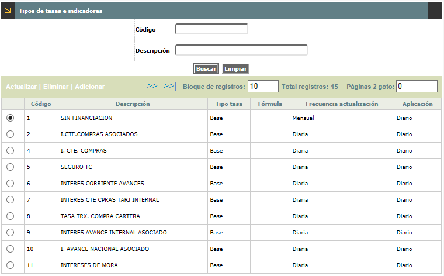
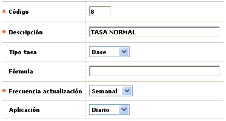
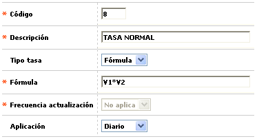
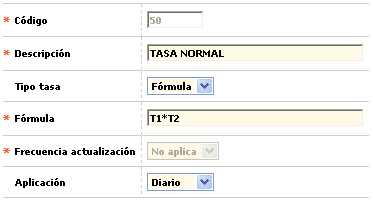

Tipos de tasas e indicadores |
Mediante esta función se habilita
la consulta y mantenimiento de la tabla en la cual se almacena la codificación
de los diferentes items o variables locales, conocidos como tipos de tasas
e indicadores económicos. Existen unos cuyo monto es un valor absoluto,
usualmente variable, y otros cuyo valor es el resultado del cálculo
de una fórmula.

El formulario contiene las opciones Actualizar, Eliminar y Adicionar.
Adicionar: Si el usuario invoca la opción Adicionar se despliega un nuevo formulario.


Descripción de campos
Código |
Campo numérico de cuatro dígitos, obligatorio, que corresponde al código asignado a cada uno de los tipos de tasas e indicadores económicos definidos por la entidad. |
Descripción |
En
este campo alfanumérico de 40 posiciones, obligatorio, se registra
el nombre asociado al código anterior. |
Tipo tasa |
Campo
tipo combo en el cual se selecciona entre Base (un valor absoluto)
o Fórmula (un cálculo a partir de otras variables)
la manera en la cual está definido el indicador. |
Fórmula |
Cuando
en el campo anterior se ha seleccionado la opción fórmula,
este campo se habilita y se vuelve obligatorio, Aquí se definen
las variables, operadores matemáticos y/o valores que componen
la fórmula mediante la cual se va a calcular el indicador. Una
variable corresponde a cualesquiera de los restantes códigos
de esta misma tabla antecedido por la letra T, por ejemplo (T3*T8)/360,
equivale al indicador identificado con el código 3 multiplicado
por el indicador identificado con el código 8 y ese resultado
dividido por el número 360; se debe tener en cuenta que el resultado
de dicha fórmula se reflejará en el formulario de Indicadores
económicos. Si la fórmula a definir requiere
el uso de funciones numéricas diferentes a las operaciones
aritméticas básicas, consulte el documento anexo. |
Frecuencia actualización |
Campo obligatorio tipo combo en el cual se selecciona la periodicidad con la que debe ser actualizado el valor del indicador económico, condición que aplica únicamente para los indicadores cuyo valor corresponde a un valor base o absoluto. Cuando se ha definido que el tipo tasa sea Fórmula, el campo se inhabilita y toma por defecto el valor No Aplica. |
Aplicación |
Dado
que varios procesos tanto en línea como en batch requieren la
definición previa de tasas e indicadores económicos, el
primer proceso que debe ejecutarse
en el día es la verificación de la existencia de esos
valores. Para poder realizar esa verificación, el procedimiento
evalúa el valor seleccionado en este campo, a partir de las opciones
contenidas en el combo y que puede ser Diario, Mensual o Anual. |
Actualizar: Si el usuario selecciona un regitro e invoca la opción
Actualizar se despliega un formulario en el cual los campos modificables
son Descripción, Tipo tasa, Fórmula (si el tipo tasa es fórmula),
Frecuencia actualización (si el tipo tasa es base) y Aplicación.
